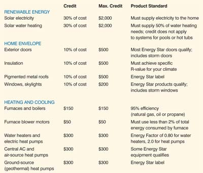

The most recent federal energy legislation - the Energy Policy Act of 2005 - makes home energy improvements more affordable through tax credits. Whether you simply add insulation or go so far as to install a solar power system, these credits help you save money in the short term on improvements that will save you even more money over the long term. The credits range from $50 to $2,000. (For specific examples, see the chart in the Image Gallery.)
Tax credits are the best form of tax incentives. Dollar for dollar, they reduce the federal income tax you owe. For example, if you owe $2,000 in federal income tax, but you bought a solar water-heating system for which you can claim a $1,200 tax credit, you would owe only $800 in tax. And with estimated savings of up to $500 annually thanks to your reduced electric or natural gas bills, you could make up the cost of your solar water heater in only a few years. The credits for solar electric and solar water-heating systems are 30 percent of the installed cost, up to $2,000. Combine that with state and local credits or rebates that may be available in your area, and you could save thousands more (visit www.dsireusa.org for specific local incentives).
For projects such as adding insulation or upgrading to Energy Star windows or skylights, you can earn tax credits of 10 percent of the products’ costs. Upgrades to heating, cooling and water heating systems can earn credits of $50 to $300.
To be eligible for these credits, homeowners must make the improvements during 2006 or 2007. (Congress is considering extending the tax credits until 2015.) For more information and help claiming these tax credits, visit www.energytaxincentives.org or consult a professional tax adviser.
U.S. Department of Energy
Find the recommended insulation levels for your climate.
Energy Star
Lists Energy Star doors, windows, metal roofs, etc.
Gas Appliance Manufacturers Association
Directories of qualifying heat and water-heating equipment.
Solar Rating and Certification Corp.
Certifies solar water heaters.
Database of State Incentives for Renewable Energy
Find incentives in your state.
- Paul scheckel is author of The Home Energy Diet, a Mother Earth News “Book for Wiser Living.”
|
 PAUL SCHECKEL The most recent energy legislation makes it possible for you to earn $50 to $2,000 for making these home energy improvements. |
ANDERSEN WINDOWS You can save up to $200 on Energy Star skylights with the tax credits enacted by recent energy legislation. |
|